Multi frame SVM
As it is obvious that even we as humans do not decide whether it is safe to cross a road by just having one glance at the road, we have started using multi-frame features instead of per-frame features in this approach.
Feature Extraction
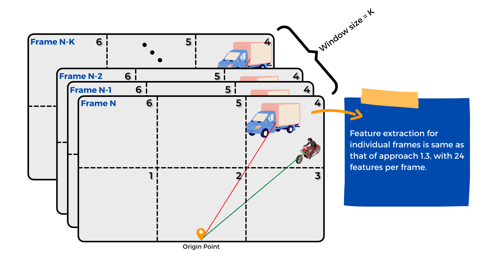
We have used a sliding window based approach for
feature extraction. For predicting label of a
particular frame, we consider an entire window of
frames (i.e., the current frame plus past few
frames). The features of individual frames are
extracted as per the feature extraction logic of
previous approach, with 24 features per frame. So if we
take window size = 10, the length of feature vector
will be 24*10 = 240.
Classification Model
Data Preprocessing tasks:
- Train-test split (using 80 videos for training, 24 for testing)
- Generating features and labels dataframe (window size = 10)
- Feature Scaling using MinMax Scaler
- We used SVM(Support Vector Machine) to train a classification model to predict if a frame is safe/unsafe.
- Precision : 0.85, Recall : 0.90 (on train data)
- Precision : 0.75, Recall : 0.88 (on test data)
- Mean average precision on test data: 0.88
- Python implementaion for the same can be found here.
Sample Prediction Outputs
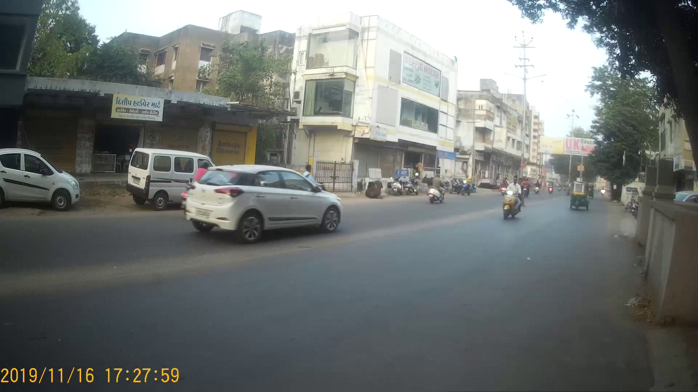
True Positive
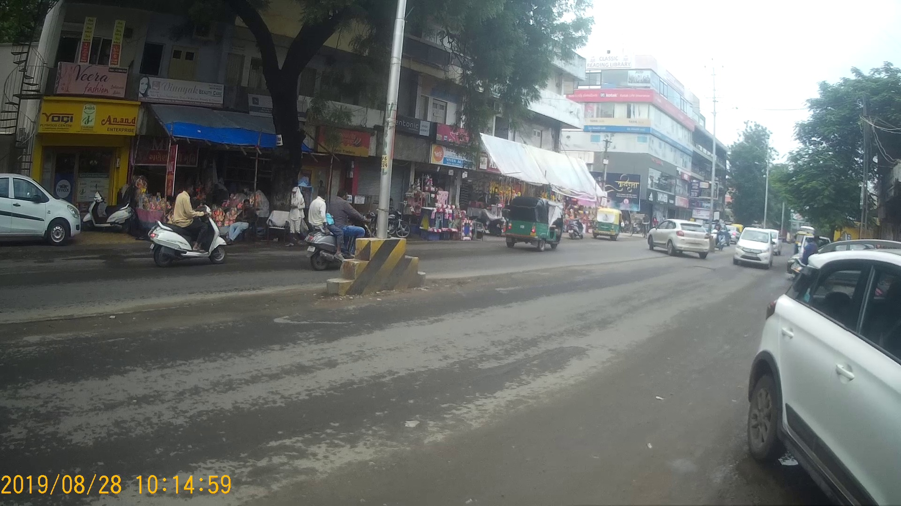
True Positive
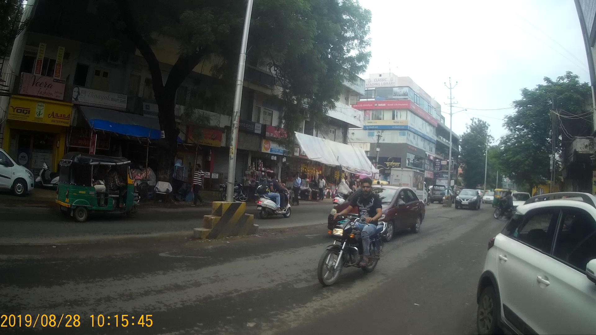
True Negative
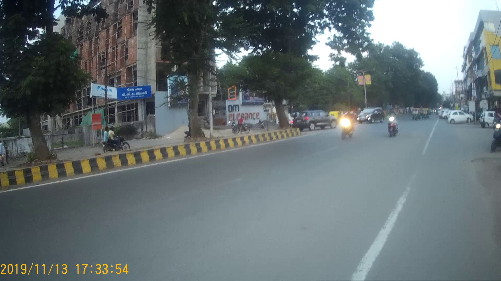
False Positive
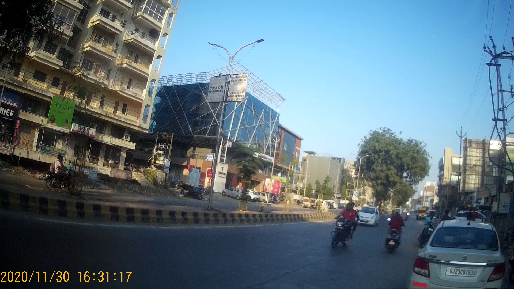
False Negative
This is similar to the above approach, in which we have used multi-frame features in a sliding window based manner; we have made an attempt to optimize the feature extraction logic.
Feature Extraction
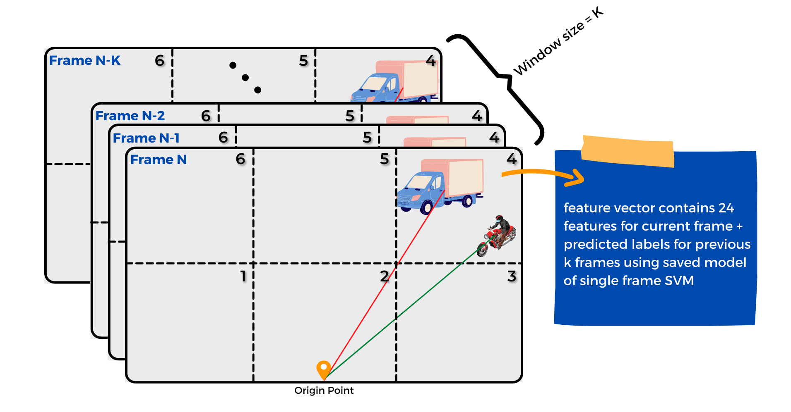
We have used a sliding window based approach for
feature extraction. For predicting label of a
particular frame, we consider an entire window of
frames (i.e., the current frame plus past few
frames). The feature vector for a particular frame
consists of 24 features of that frame, and it
additionally consists of predicted labels for few
previous frames using saved model of single frame SVM.
So if we take window size = 10, the length of
feature vector will be 24 + 9 = 33.
Classification Model
Data Preprocessing tasks:
- Train-test split (using 80 videos for training, 24 for testing)
- Generating features and labels dataframe (windows size = 10)
- Feature Scaling using MinMax Scaler
- We used SVM(Support Vector Machine) to train a classification model to predict if a frame is safe/unsafe.
- Precision : 0.87, Recall : 0.85 (on train data)
- Precision : 0.79, Recall : 0.84 (on test data)
- Mean average precision on test data: 0.84
- Python implementaion for the same can be found here.
Sample Prediction Outputs
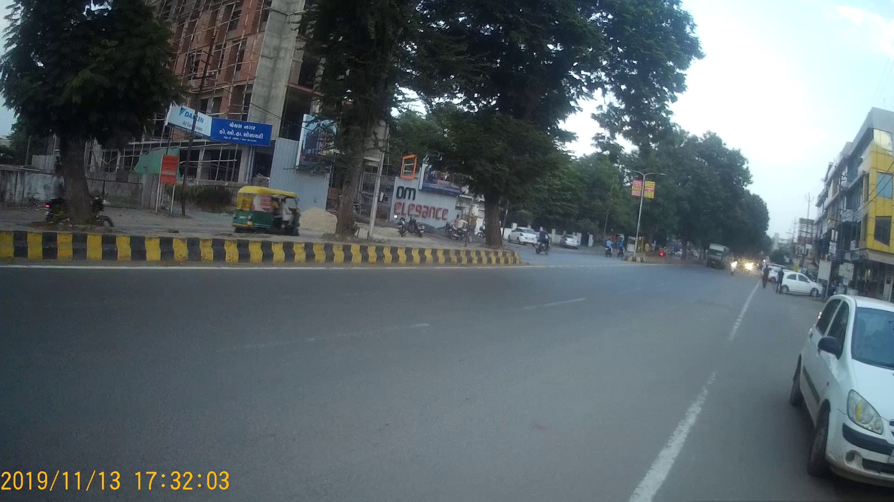
True Positive
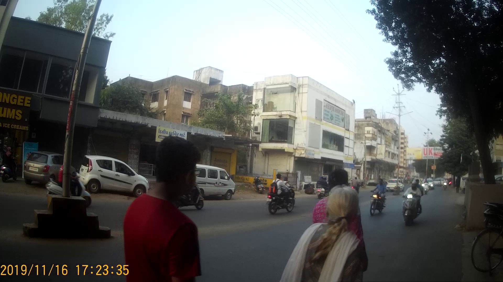
True Positive
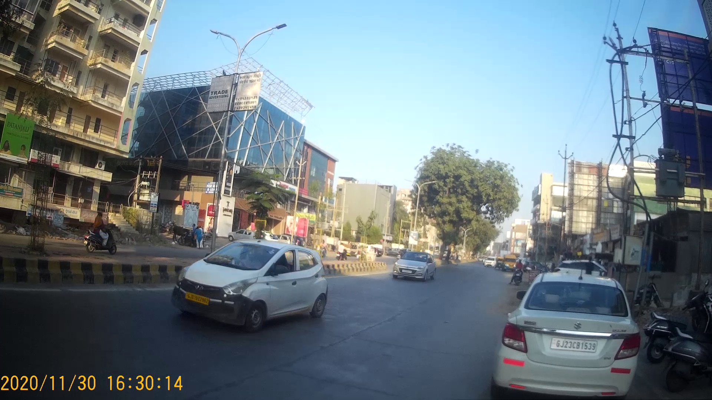
True Negative
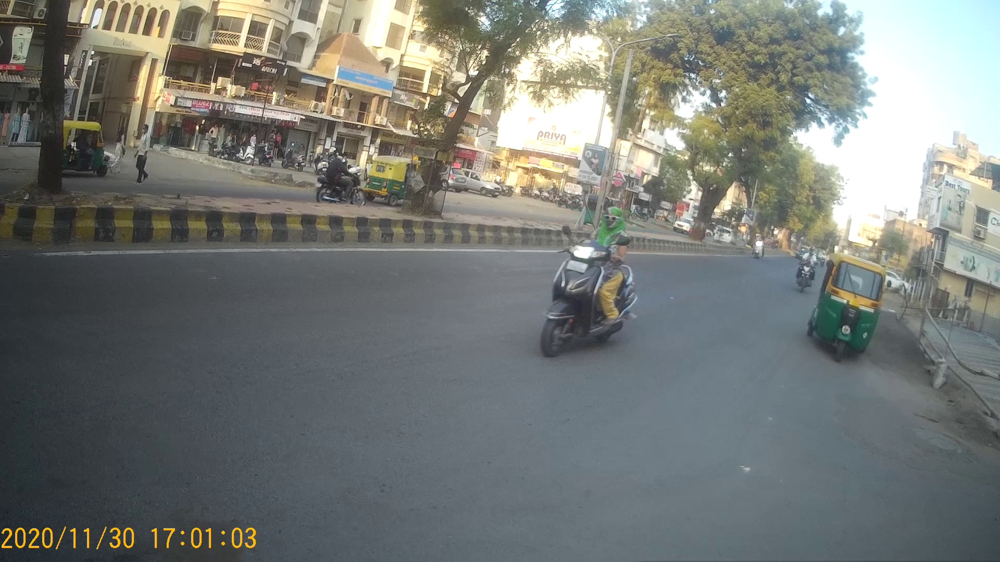
True Negative
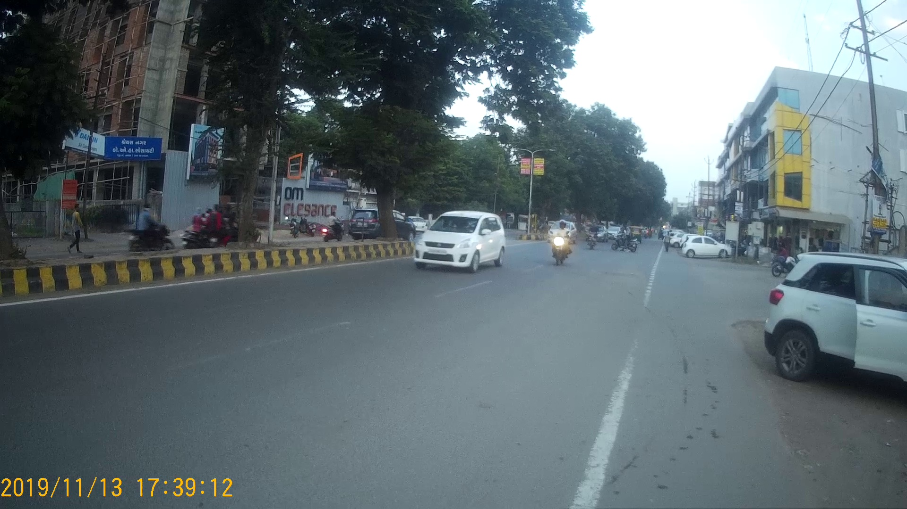
False Positive
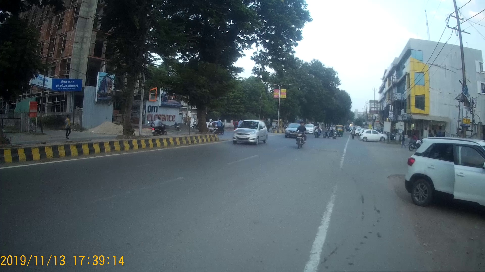
False Negative